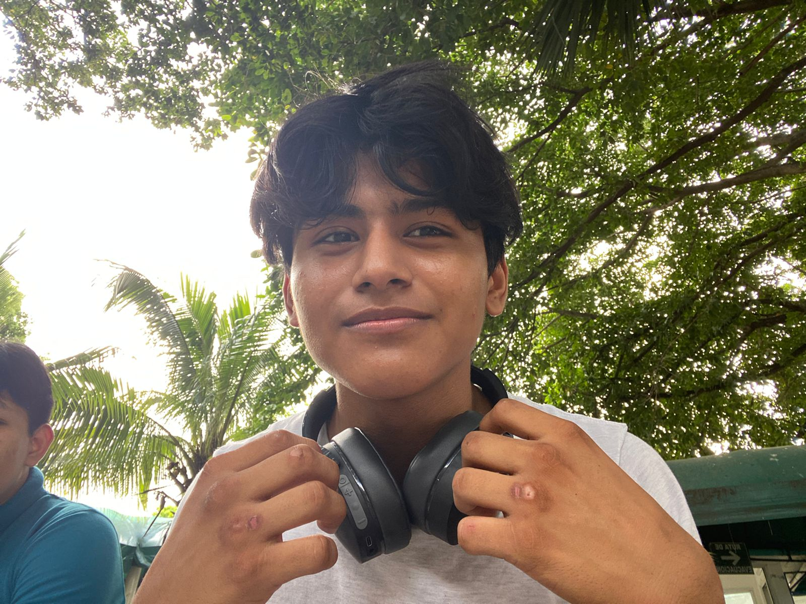
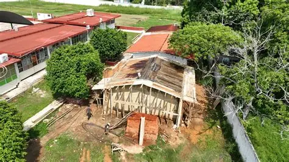
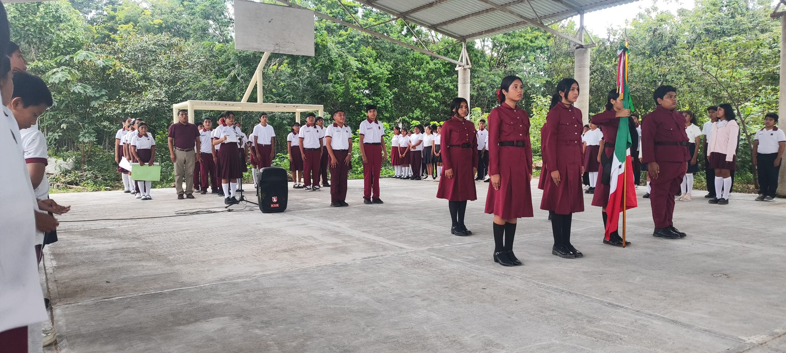
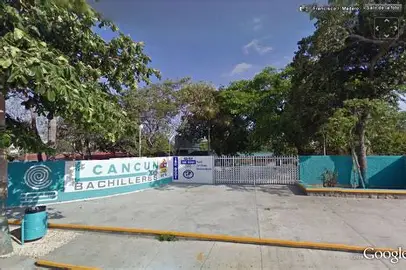

wenas wenas, como estan? mi nombre es Ian de jesus gamboa julian soy un chico de 17 años con muchos sueños y emperanzas hoy les hablare de mi en distintas de mi vida.
no me considero un chico con muchas habilidades a decir verdad, pero si tuviera que mencionar algunas serian algunas curiosas como lo puede llegar a ser las siguentes
yo no creo tener muchos hobbies a decir verdad, aunque si llego a tener algunos que son muy puntuales, y que se podria decir que todos los dias lo estoy haciendo.
Las siguentes, que aunque no son muy frecuentes, igual me gusta realizar.
| Dia | Hobbies | Hora |
|---|---|---|
| Lunes | escuchar musica | desde las 6am |
| martes | cantar | entre las 12pm o 4pm |
| miercoles | ver anime | aproximadamente entre las 10pm |
| jueves | Escribir poesia | 00:00 |
| viernes | escuchar musica | a las 7 am |
| sabado | bailar | entre las 8am a 2pm |
| domingo | ver anime | desde las 10pm |
me llego a demorar en decidirme en las cosas
me cuesta expresar mis sentimientos en ocasiones, llegando a tener repercusiones algunas veces
llego a procrastinar demasiado, dejando a lo ultimo todo.
llego a ser agradecida con las personas que realizan un gesto amable conmigo
No mantener odio ni rencor con nadie, pues siento que no vale tanto la pena
Yo nací en el año 2008, en la ciudad de oluta, en es estado de veracruz, por lo cual la mitad o los primeros años estudie, ahí
La mitad de la primaria la estudie en la ciudad de acayucan, yendo a una escuela llamada Profesor Rafael M. Aguirre. En esta escuela recuerdo que el primer dia de clase que tu, me pelee con un niño de mi salón porque me escape de clases cuando aun no habia terminado mi tarea. Mis promedios dejaban mucho que desear, debido a que solo sacaba 8 y 7. Yo concluí tercero de primaria unos meses ya que me iba a vivir a la ciudad de cancún, y por lo cual tuve que cambiarme de escuela, yendo a una escuela llamada Cuna del meztizaje. En esta escuela me fue aun peor jaja, ya que mis promedios finales se mantuvieron por completo en 7 en ocasiones 8. Aun así eso no fue lo que más carácterizo este periodo, pues en este, los citatorios eran muy a diario, lleganfo a punto de que en 6to grado de primaria estuve a punto de ser expulsado. al final mi promedio al concluir la primaria fue de 7.4

En el año 2020 yo estudie la secundaria en la telesecundaria "Carlos monsivais" que se encontraba cerca de mi casa, como a 20 minutos caminando. Recuerdo que el primer año no hubo clases presenciales porque estabamos en plena pandemia, entonces todas nuestras actividades las haciamos en la casa, en primer grado yo obtuve un promedio de 8.4. Despues en secunda grado fue en donde por fin regresamos a clases presenciales y ahí conocí a mi mejor amigo de aquel entonces, llamado Isidro. Durante este ciclo escolar yo obtuve un promedio de 9.8 lo cual fue asombroso para mi y me motivo a echarle más ganas al estudio. Lo que fue de el último año fue de que fuí responsable con mis estudios pero a la vez salía mucho con mi mejor amigo, lo que me permitio mejorar mi habilidad social.

En el año 2023 yo entre a la preparatoria, yendo a una escuela llamada "Preparatoria por colegio de bachilleres cancun 2", ingrese a finales de julio del 2023. actualmente estoy a punto de graduarme y solo me queda decir que vivi muchas experiencias muy increibles que nunca en mi vida creí que iba a conseguir. En los semestres que estuve aquí afortunadaamente me ha ido bien y he tenido un promedio decente y si todo sigue bien, saldre de la preparatoria con un promedio final de 9.1

ahora un video ramdown que tengo en mi galeria de mi computadora xd